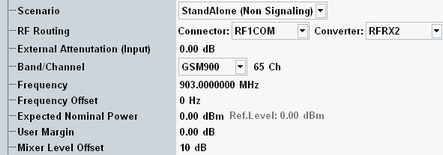

The measurement is configured using the parameters in the multi-evaluation configuration dialog. The following parameters configure the RF input path.
See also: "Connection Control (Measurements)"

Selects the measurement scenario. The GSM measurement can be used in Standalone mode or in combination with another R&S CMW application.
- Standalone:
Standalone mode executes the non-signaling measurement independently, using all GSM measurement settings. - Combined signal path:
Combined signal path (CSP) allows you to use a GSM signaling application (options R&S CMW-KS200) in combination with GSM measurement. The signaling application is selected by the additional parameter "Controlled by".
The signal routing and analyzer settings in the GSM measurement display values determined by the signaling application. The corresponding measurement settings are remembered in the background and displayed again when switching back to the standalone scenario. For more details, refer to "Parallel Signaling and Measurement".
Connection status information of the master application is displayed at the bottom of the measurement views. Softkeys and hotkeys configure and control the master application from the measurement, see "Additional Softkeys and Hotkeys". - Measure@ProtocolTest:
Allows you to use a GSM protocol test application in parallel to the GSM multi-evaluation measurement. The protocol test application is selected by the additional parameter "Controlled by".
The signal routing and analyzer settings described in this section are ignored by the measurement application. Configure the corresponding settings within the protocol test application. The remaining GSM measurement settings must be compatible with the configuration of the protocol test application.
Selects the input path for the measured RF signal, i.e. the input connector and the RX module to be used.
In the standalone (SA) scenario, these parameters are controlled by the measurement. In the combined signal path (CSP) scenario, they are controlled by the signaling application.
For connector and converter settings in the combined signal path scenario, use one of the ROUTe:GSM:SIGN<i>:SCENario:... signaling commands.
Remote command:ROUTe:GSM:SIGN<i>:SCENario:... (CSP)
Defines the value of an external attenuation (or gain, if the value is negative) in the input path. The power readings of the R&S CMW are corrected by the external attenuation value.
The external attenuation value is also used in the calculation of the maximum input power that the R&S CMW can measure.
If a correction table for frequency-dependent attenuation is active for the chosen connector, then the table name and a button are displayed. Press the button to display the table entries.
In the standalone (SA) scenario, this parameter is controlled by the measurement. In the combined signal path (CSP) scenario, it is controlled by the signaling application.
Center frequency of the RF analyzer. Set this frequency to the frequency of the measured RF signal to obtain a meaningful measurement result.
The relation between GSM band, RF frequency and channel number is defined by 3GPP (see "GSM Frequency Bands and Channels").
- Enter the frequency directly. The band and channel settings can be ignored or used for validation of the entered frequency. For validation, select the designated band. The channel number resulting from the selected band and frequency is displayed. For an invalid combination, no channel number is displayed.
- Select a band and enter a channel number valid for this band. The R&S CMW calculates the resulting frequency.
In a combined signal path scenario, the measurement is restricted to valid GSM channels.
In the standalone (SA) scenario, these parameters are controlled by the measurement. In the combined signal path (CSP) scenario, they are controlled by the signaling application.
Sets positive or negative frequency offsets to be added to the center frequency of the configured channel.
In the standalone (SA) scenario, this parameter is controlled by the measurement. In the combined signal path (CSP) scenario, it is controlled by the signaling application.
Sets the analyzer in accordance with the nominal power of the RF signal to be measured. The nominal power is the average output power at the DUT during the measurement intervals where the RF transmitter is on. The "Ref. Level" is calculated as the expected peak power at the output of the DUT:
Reference level = expected nominal power + user margin
The actual input power at the connectors must be within the level range of the selected RF input connector; refer to the data sheet. It is calculated as the "Reference Level" minus the "External Attenuation (Input") value, if all power settings are configured correctly.
In the standalone (SA) scenario, this parameter is controlled by the measurement. In the combined signal path (CSP) scenario, it is controlled by the signaling application.
Margin that the R&S CMW adds to the "Expected Nominal Power" to determine its reference power ("Ref. Level"). The "User Margin" is typically used to account for the known variations of the RF input signal power, e.g. the variations due to a specific channel configuration.
The appropriate values depend on the configuration of the UL GSM signal, e.g. on the modulation scheme. It is small for GMSK-modulated bursts because GMSK is a constant-envelope modulation scheme. For 8PSK (16-QAM)-modulated bursts, a user margin of approx. 5 dB (7.5 dB) is sufficient.
In the standalone (SA) scenario, this parameter is controlled by the measurement. In the combined signal path (CSP) scenario, it is controlled by the signaling application.
Varies the input level of the mixer in the analyzer path. Negative offsets reduce the mixer input level, positive offsets increase it. Optimize the mixer input level according to the properties of the measured signal.
Mixer level offset | Advantages | Possible shortcomings |
|---|---|---|
< 0 dB | Suppression of distortion (e.g. of the intermodulation products generated in the mixer) | Lower dynamic range (due to smaller signal-to-noise ratio) |
> 0 dB | High signal-to-noise ratio, higher dynamic range | Risk of intermodulation, smaller overdrive reserve |
In the standalone (SA) scenario, this parameter is controlled by the measurement. In the combined signal path (CSP) scenario, it is controlled by the signaling application.